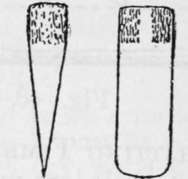
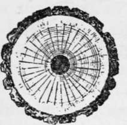

Axemanship. Qualities And Utilization Of Wood. Part 4
Description
This section is from the book "Camping And Woodcraft", by Horace Kephart. Also available from Amazon: Camping and Woodcraft.
Axemanship. Qualities And Utilization Of Wood. Part 4
Fig. 41. Maul.
Fig. 42. Gluts (edge and face).
In splitting timber, one must observe the grain and structure of the wood. Naturally, he would se lect stuff that is straight-grained; but that is not all. Fig. 43 shows the end of a log that has been sawed off square. Observe that there are four kinds of structure to be considered: (1) the bark, (2) the light-colored sapwood next to the bark, (3) the mature wood, (4) the dark-colored heartwood. It is seldom that heartwood splits evenly. Outside of it we notice the concentric rings of annual growth; also the medullary rays, radiating from the center like spokes of a wheel. Both of these continue through the sapwood, though not so shown here, as they are less conspicuous in it.
Now the natural lines of cleavage are along the medullary rays, which are pithy. Hence a log can be split straight through the center (if clear and straight-grained) from any point on the circumference, but if you try to make other splits parallel with this, you will have trouble, for you are attempting to cross the rays at an angle. Some trees can be split, by careful manipulation, into three slabs or four slabs with parallel faces, but usually it will not pay you to try it.
Fig. 43. Cross-section of Tree Trunk.
Fig. 44. Rail Splits.
The natural way of cleavage is shown in Fig. 44, which illustrates the method of splitting rails. First the log is split through the center, then each half similarly. Then one of the quarters is split through the line ab, following, as you see, a medullary ray. Next the point of the wedge is split off across cd (direction of annual rings), forming one rail. The remaining billet is again split in the same direction, ef, and its separate parts are now split along the rays, forming, in this instance, five rails. The number, of course, will depend upon the size of the log.
To Split A Log
Begin at the smaller or top end, because it splits easiest that way. Advantage may be taken of a natural crack or check, but if there is none, take axe in one hand, maul in the other, and start a crack. Into this drive two wedges, as in Fig. 45, and others into the longitudinal crack on top as it opens. To ensure a straight split: First score the log lengthwise with the axe, driving the bitt in with a moderate tap or two, at one place, then extending the cut backward with another, and so on. finally splitting this apart with gluts. A free-splitting log of moderate size can be split without wedges, by using two axes, one working behind the other.
Fig. 45. Splitting a Log.
Slabs for siding and puncheons for flooring are thus split out and then hewn smooth on the flat side. Almost any tree that splits straight will do. Those commonly used are chestnut, oak, ash, poplar, cedar, spruce and pine. A small tree is merely split through the center, and the halves laid with round side out, or down, as the case may be. A larger one is first halved, and then each half is split parallel with the flat side, if the grain permits, making four puncheons from each log. Very large ones are split into long bolts, in the same manner as clapboard bolts (see below), thus making a considerable number of narrow puncheons from each log, which are to be hewn of even thickness on both edges.
Puncheons usually are cut so that two lengths equal the length of the room—eight-foot puncheons for a sixteen-foot room, and so on. They are laid by fitting the rough side to the sleepers. It is best to leave them loose until they have seasoned; then true up their edges, spike them down, and you will have a tight floor of uncommon solidity and warmth.
Selecting A "Board Tree"
If clapboards or other thin pieces are to be riven, a nice judgment must be exercised in selecting the right kind of tree. Wood for this purpose must be sound, straight-grained and springy. If brash or doty, it will not do at all. Nor will "any old wood" do that splits easily; it must split straight and make thin boards.
The species of tree will depend, of course, on what growths one has to choose from. Cedar is best, as it is easily riven and is very durable. m Boards from five to six feet long can be split out of cedar with no other tool than an axe, and a club or mallet to tap it. If the board shows a tendency to "run out," the workman changes ends and makes another split back toward the first one, or "coaxes" it after the manner to be described hereafter. Such axe-riven boards or shingles are commonly called "splits".
Here in the southern Appalachians, our first choice for clapboards is "mountain oak," when we can find one that splits well. Its wood resembles that of live oak in hardness and texture. Otherwise we take white, black, red, or water oak. White and yellow pines are much used; occasionally yellow poplar. A young, quick-growing chestnut tree makes good 18-inch shingles, but not the longer clapboards or "shakes," as chestnut is prone to "run out" when long splits are made. Mature chestnut trees generally are full of worm-holes. Sometimes a hemlock is found that will make clapboards, if split bastard (the way the rings run), but, as a rule, hemlock has a spiral grain.
When a suitable species is found, the next thing is to pick out a good "board tree." This takes an experienced eye, so leave it to a native woodsman, if you can. The way he does it is not easy to explain. First he looks for a straight trunk, free from knots, limbs, and dote. It should be not less than two feet thick. Then he scans the bark. If the ridges and furrows run straight, in a general way, parallel with the trunk, it is an indication of straight grain. An oak with a large fork is likely to split well.
Continue to:
- prev: Axemanship. Qualities And Utilization Of Wood. Part 3
- Table of Contents
- next: Axemanship. Qualities And Utilization Of Wood. Part 5